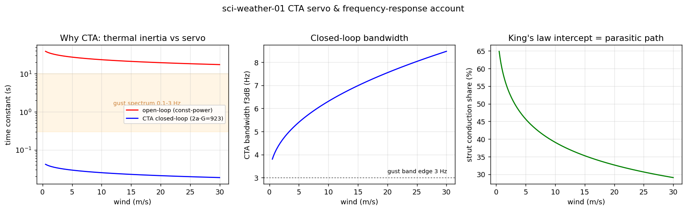
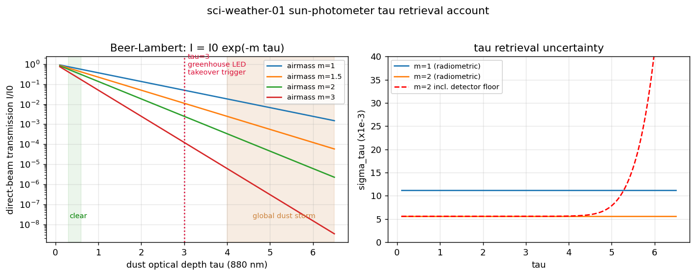
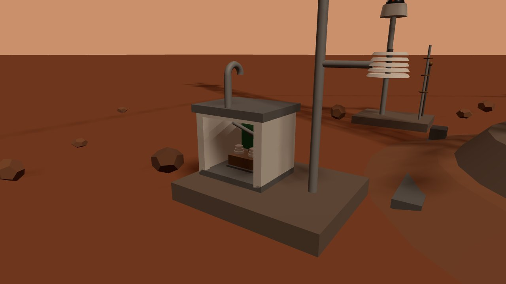
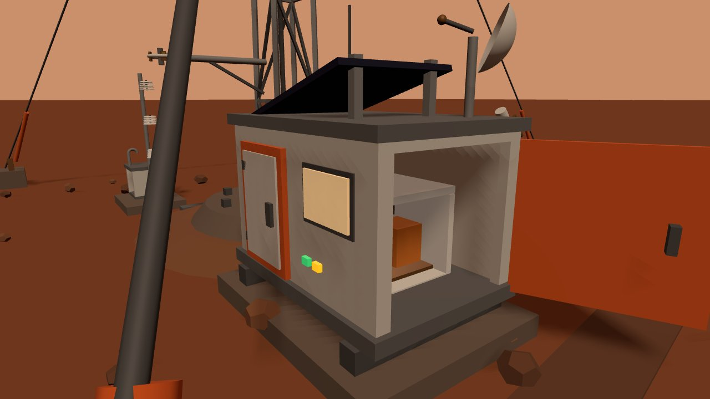
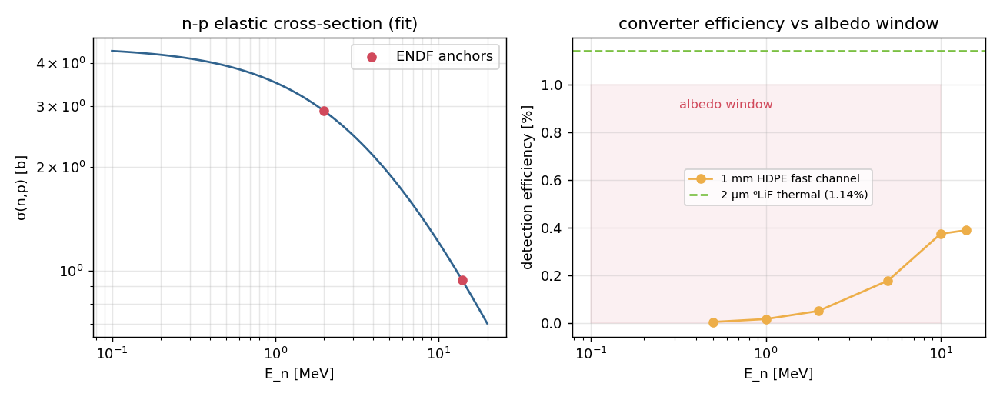
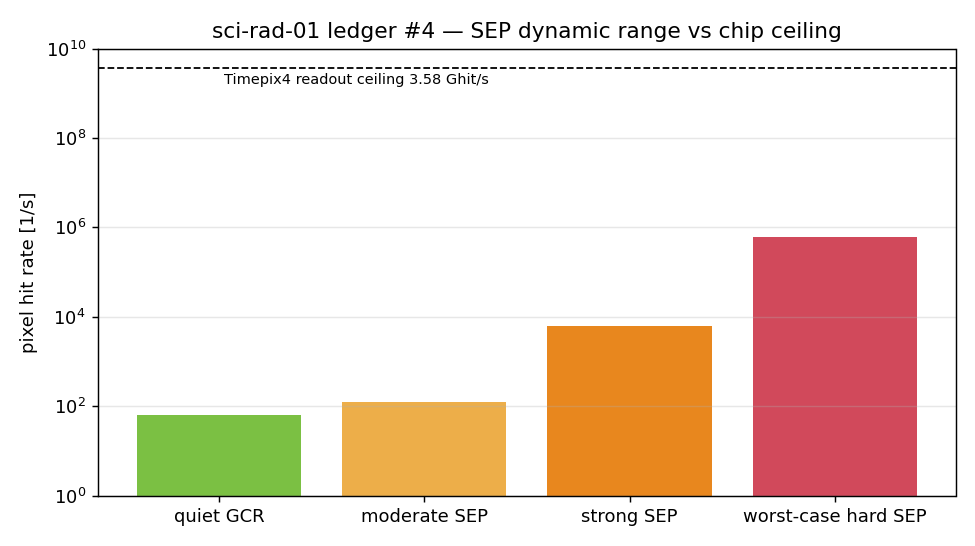

How they work
Five instruments worth the detail — three on the mast, two underground — because in each case the obvious terrestrial answer fails outright at 610 Pa, or next to a fusion plant, or under three kilometres of rock.
WindWhy the big cups are decoration
Martian dynamic pressure is 83× below Earth's: a 30 m/s gale carries 6.6 Pa, the same push as a 3.3 m/s breeze at home. An Earth-standard cup set (7 cm cups, 15 cm arms) would not start turning until 3.44 m/s, missing most of the wind spectrum. The oversized display cups on the masthead start at 0.79 m/s — honest, just slow. The real measurement is made by hot films, as on Perseverance's MEDA.
A film left to itself is useless here: its open-loop thermal time constant is 17–48 s, so constant-power heating cannot follow even a 0.01 Hz fluctuation. The instrument is the servo. A constant-overheat bridge pins the film's resistance — hence its temperature — and whatever heat the wind steals, the bridge instantly resupplies; the resupply power is the measurement. That collapses the effective time constant by a factor of ~925 to 29.5 ms (f₃dB 5.4 Hz), which finally covers the 0.1–3 Hz gust band. Three films at 120° resolve direction to 1.4–1.8° — two would leave a mirror ambiguity, three is the minimal unique solver.
PressureA buffer volume with a cutoff frequency
The barometer is a vacuum-referenced silicon capsule, and its geometry is set by one collision: the first 18 µm diaphragm deflected 6.2 µm at full scale and would have bottomed out on a 2 µm capacitive gap. Deflection scales as 1/t³, so the shipping part is 40 µm and moves 0.56 µm — 0.1 Pa maps to 10.4 ppm of capacitance, comfortably inside a commodity converter. The intake is not a hole but a filter: pipe resistance times buffer-volume compliance forms a first-order low-pass at 1.39 Hz, deliberately placed so thermal tides and dust-devil transients pass while wind-turbulence noise does not.
Optical depthCalibration you have to earn
τ comes from Beer–Lambert extinction of the direct solar beam at 880 nm, which requires knowing the unattenuated intensity I₀ — and there is no standard lamp on Mars. The Langley method substitutes the atmosphere itself: regress ln I against airmass over a morning and the intercept is ln I₀. A Monte Carlo of that procedure returned a warning rather than a number. On a hazy morning, τ drifting during the sweep inflates σ(I₀) to 5.9% — a single-morning calibration is simply unusable. Screening for stable mornings brings it to 1.5%, and averaging four mornings reaches 0.73%. The 1% calibration term assumed elsewhere on this page is that procedure's output, not an assumption.




SurfaceClassification by shape, not by threshold
The surface field is a mixture — primary galactic cosmic rays, albedo neutrons scattered back out of the regolith, and secondary showers — so the station is built for classified counting and dose equivalent, not spectroscopy (momentum measurement belongs to the orbital magnetic spectrometer on the relay satellite). Timepix4 records per-pixel time-of-arrival and time-over-threshold, which makes species visible as morphology: an electron curls, a minimum-ionising proton lays down a straight bar, a heavy ion burns a short bright blob. The LET ladder spans three decades — 0.24 keV/µm for a 0.5 MeV electron up to 286 keV/µm for a GeV/u iron nucleus, the z²=676 scaling doing the work. A MIP deposits 22.8 ke in 300 µm of silicon, 46× the 500 e threshold (11× in the worst four-pixel corner split), so classification is limited by shape, never by sensitivity.
Neutrons have no charge and leave no track, so the tower carries converters: a bare reference layer, 1 mm of HDPE for fast neutrons by n–p recoil, and 2 µm of ⁶LiF for thermal capture. The efficiencies are small and honest — 0.02→0.39% across 1→14 MeV, 1.13% thermal — which against the Martian albedo band of 0.05 n·cm⁻²·s⁻¹ works out to 2.2 fast counts per hour and 86 thermal. Neutron spectra here are an hour-scale product, and the knowledge card says so.
UndergroundA detector quieter than the rock
The sentinels use 4H-SiC PiN diodes — the same epitaxial stack as an avalanche device with the gain implant left out. They can afford to: ⁶Li(n,α)t releases 4.78 MeV, and a 2.05 MeV alpha makes about 260,000 electron–hole pairs in SiC, two orders of magnitude above a MIP. Gain would only add noise. What the wide bandgap buys instead is silence. Generation current scales as n_i ∝ exp(−E_g/2kT), and 3.26 eV puts SiC roughly 18 decades below silicon: a silicon device on this fence would need cooling and light-tighting by 350 K, while SiC stays under 10⁻²⁰ A at 450 K and is blind to visible light for free.
The converter thickness is a genuine optimum rather than a maximum. Thicker ⁶LiF converts more neutrons but re-absorbs its own reaction products (alpha range 5.9 µm, triton 33 µm), so efficiency peaks at 4.72% at 29.9 µm and falls back to 4.0% by 60 µm. The design sits at 30 µm, on the flat.
The fence rate is not a guess either: it inherits the tokamak's own neutronics. A 2.271×10²⁰ n/s source at 640 MW fusion power, carried by the segmented Geant4 chain through blanket, shield, vacuum vessel, TF coils and cryostat to the cryostat exterior (r = 4.235 m), then through the declared 0.30 m of borated concrete to a cumulative escape of 1.164×10⁻¹⁰ per source neutron (registered target 1.92×10⁻¹⁰), and 1/r² over 58 m, arrives as 62.5 n·cm⁻²·s⁻¹ — the 2.32 counts/s the perimeter display actually shows. The earlier 2.15 n·cm⁻²·s⁻¹ → 0.08 counts/s sat behind a self-assumed 2 m shield and a 3.01×10²⁰ n/s source, both retired 2026-09-02; the chain's own qualifiers (per-join bias unapplied, chain reached 0.50 m at two records, resolved by a single-join probe) travel with the number.



